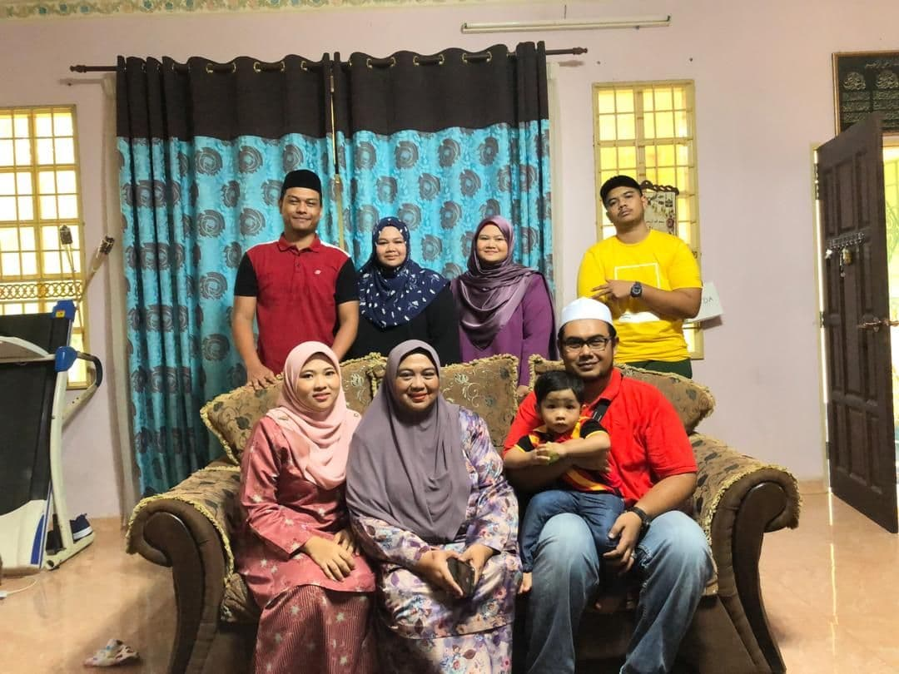

solihahnajihah@gmail.com

BIODATA
Nur Najihah Solihah Binti Che Gi
25-07-2000
Hospital Raja Perempuan Zainab II, Kelantan
Music, Watching drama, Fangirling, Eating.

MY FAMILY
Mother : Nolsar Binti Che Mat
Brother : Ahmad Nafis Solihin Bin Che Gi
Brother : Ahmad Nashrin Solihin Bin Che Gi
Brother : Ahmad Naeem Solihin Bin Che Gi
Sister : Nur Nadhirah Solihah Binti Che Gi